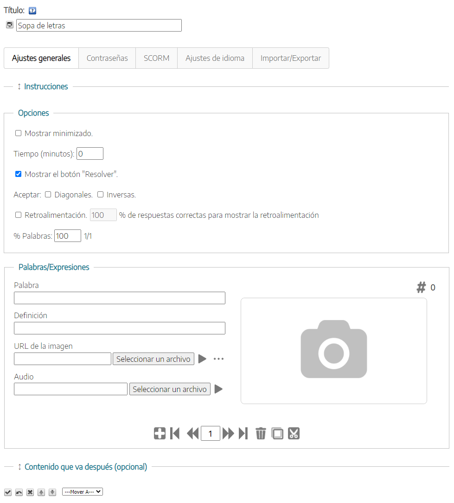
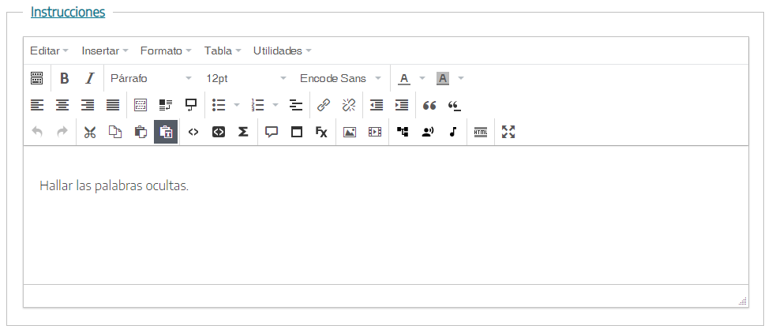
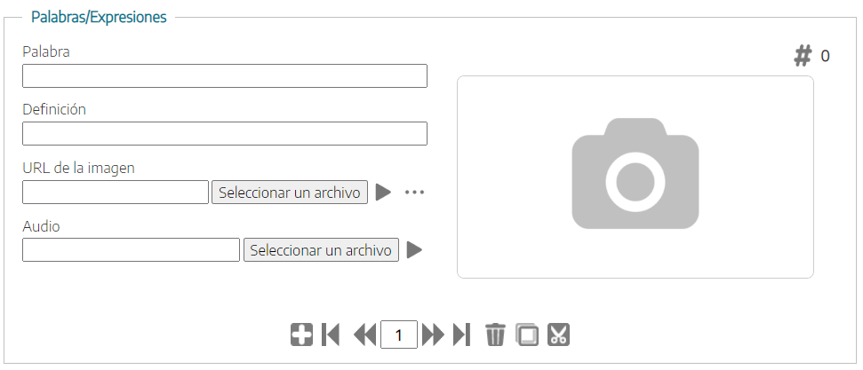

Sopa de letras
Utilizaremos este iDevice para crear actividades tipo sopa de letras en las que podrá utilizar texto, imágenes y sonidos
Al seleccionar el iDevice "Sopa de letras" del listado de iDevices se nos mostrará lo siguiente en nuestro eXeLearning:

En la parte superior, tendremos la posibilidad de modificar el título del iDevice y asignar un icono. Por último, tendremos la opción de incluir un contenido posterior (contenido que va después. Opcional).
Vemos que existen una serie de pestañas (modo avanzado activado), cada una con una funcionalidad diferente que nos permitirá configurar nuestro juego de una manera muy flexible.
Ajustes Generales
La pestaña "Ajustes Generales" es la que se muestra por defecto al crear el iDevice Sopa de letras.
En esta pestaña definiremos las instrucciones para realizar el juego, las diferentes opciones y configuraciones disponibles y las preguntas.
- Al hacer clic sobre el apartado "Instrucciones" se abrirá un cuadro de texto en donde podremos enunciar las instrucciones a seguir.
- Al hacer clic sobre el apartado de "Opciones" podremos decidir si mostramos el juego minimizado, el tiempo, si mostramos el botón de resolver, si aceptamos palabras escritas en diagonal e inversas, una retroalimentación específica al finalizar el juego si han alcanzado un cierto porcentaje de aciertos y finalmente, el número de preguntas a mostrar en el juego.
- En el apartado "Palabras y expresiones", por cada una de ellas podremos introducir:
- La palabra a encontrar en la sopa de letras y una definición de la misma que se mostrará en el lateral del juego.
- Una imagen relacionada.
- Un audio que describa la palabra

Contraseñas
En la pestaña "Contraseñas" podremos crear un itinerario de desafíos en el que los jugadores no podrán acceder a una nuevo juego hasta que consigan una clave en una actividad previa. Para esto, podremos establecer un código de acceso así como un mensaje que se mostrará a los jugadores cuando alcancen un porcentaje fijado de aciertos, y que podrán usar como contraseña para un nuevo desafío o una actividad posterior.

Ambos son opcionales, y su configuración aparecerá solo si los marcamos, como en la imagen.
SCORM
En la pestaña "SCORM" podremos determinar si queremos guardar los resultados obtenidos por nuestro alumnado y en qué condiciones queremos hacerlo cuando exportemos nuestros contenidos.

Hay que tener en cuenta que esta opción de guardado solo estará disponible para exportaciones SCORM y cuando publiquemos nuestros contenidos en plataformas como Moodle u otras plataformas LMS compatibles con SCORM.
Ajustes de idioma
Pestaña en donde podremos personalizar los textos y mensajes automáticos que genera el iDevice.
Sopa de letras
Encuentra los nombres de animales que se oculta en la sopa de letras
{kind=link}
{kind=link}
{kind=link}
{kind=link}
{kind=link}
Practica eXe: Sopa de letras
Realiza los siguientes procedimientos:
- Abre el archivo miarchivo.elp que has creado en la actividad anterior (Puedes hacer doble clic sobre él).
- Crea un iDevice "Sopa de letras" en el nodo "Juegos" ya creado anteriormente. Modifica el título.
- Introduce al menos cinco letras.
- Una vez terminado haz clic en el botón
 para ver el resultado.
para ver el resultado. - Guarda los cambios. (Archivo > Guardar)
Si tienes alguna duda puedes consultar el siguiente vídeo:
Obra publicada con Licencia Creative Commons Reconocimiento Compartir igual 4.0